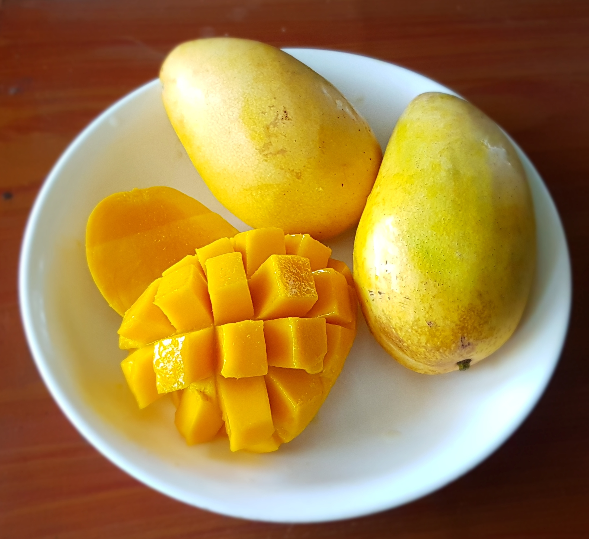
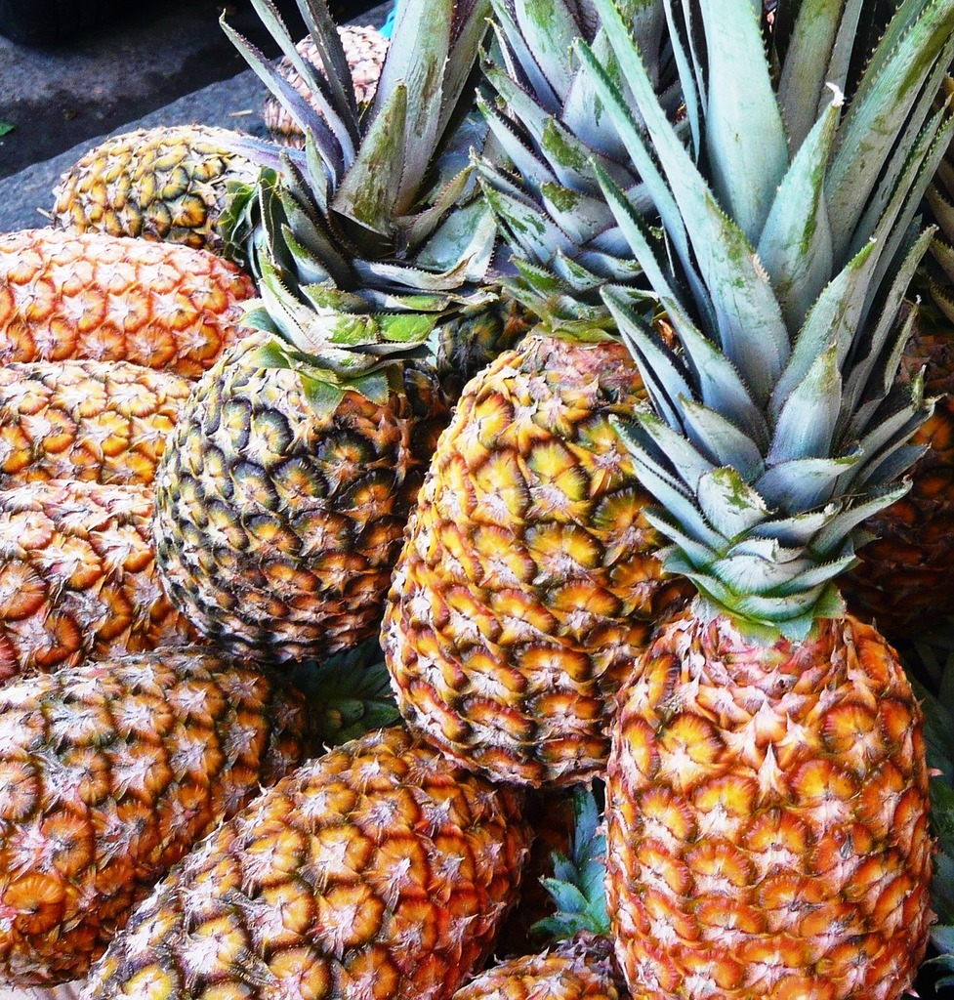
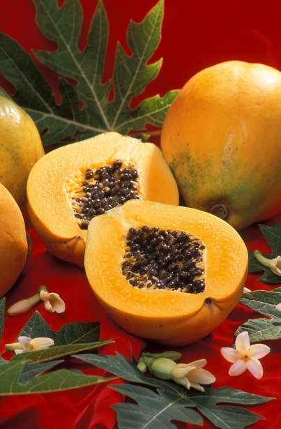
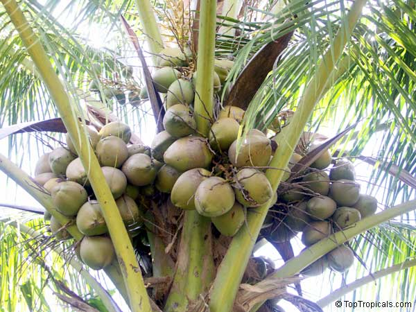

Welcome to the Tropical Fruits Page
Tropical fruits are grown in warm climates around the world. They are known for their bright colors, sweet flavors, and refreshing taste. Besides being delicious, these fruits are rich in vitamins, minerals, fiber, and antioxidants that help support a healthy lifestyle.

🥭 Mango
Mangoes are often called the "King of Fruits." They have a sweet, juicy flavor and are an excellent source of Vitamin A and Vitamin C. Mangoes can be eaten fresh, added to smoothies, or used in desserts.
Health Information: Healthline – Mango Nutrition Facts and Health Benefits

By: PICRYL
🍍 Pineapple
Pineapples have a sweet and slightly tangy taste. They contain Vitamin C and bromelain, an enzyme that helps with digestion. Pineapples are commonly enjoyed fresh, grilled, or blended into juices.
Health Information: Healthline – Pineapple Benefits
By: flickr
🍌 Banana
Bananas are one of the world's most popular fruits. They are rich in potassium, provide natural energy, and make a healthy snack before or after exercise.

🍈 Papaya
Papayas have soft orange flesh and a naturally sweet flavor. They are packed with Vitamin C and contain enzymes that support healthy digestion.

By: TopTropicals
🥥 Coconut
Coconuts are unique because almost every part of the fruit can be used. Coconut water is refreshing, the white flesh is nutritious, and coconut milk is commonly used in cooking and desserts.